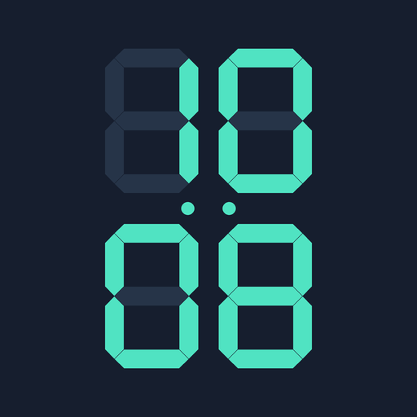
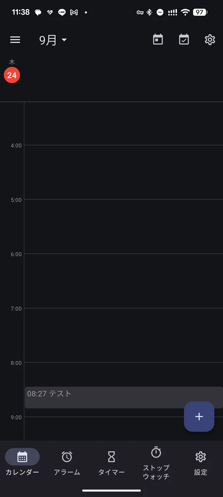
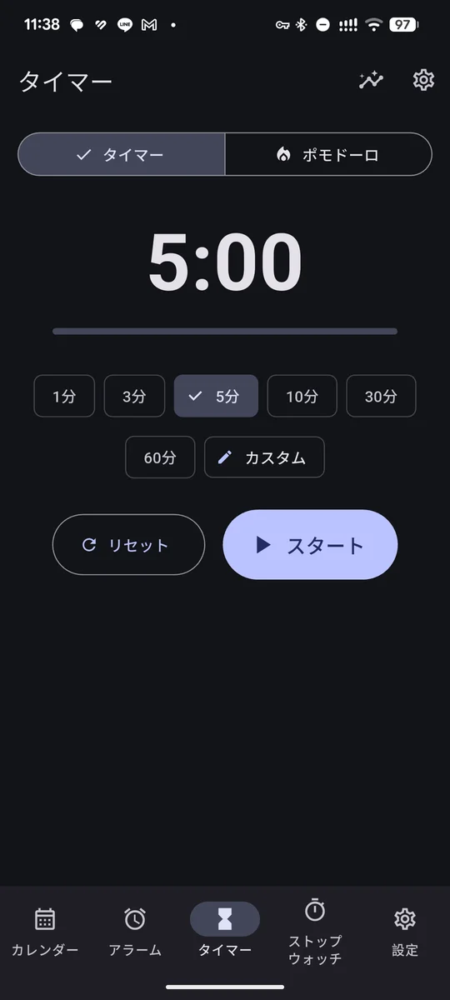
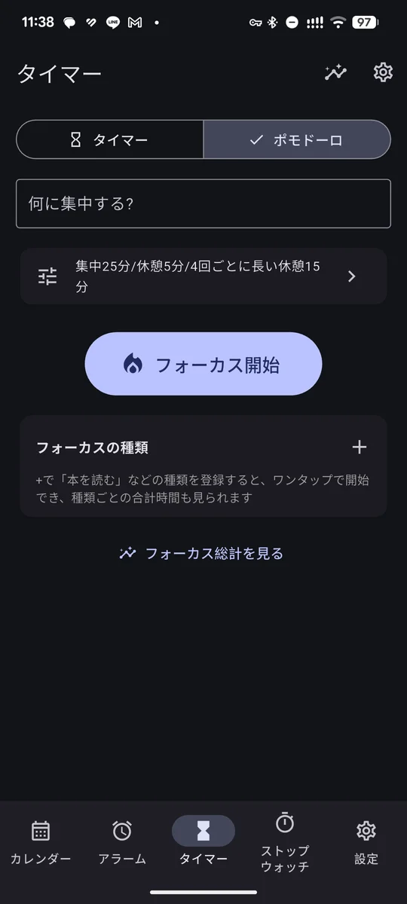
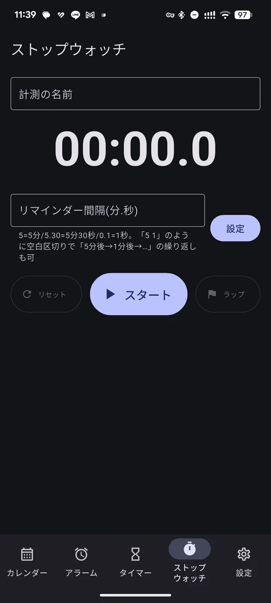

ADHD時間管理「気づいたら時間が過ぎていた」「予定を忘れてしまう」――そんな悩みのために作った Android アプリです。アラーム・タイマー・ポモドーロ・カレンダー・ToDo をひとつにまとめました。
すべて下のタブからワンタップで切り替えられます。

カレンダー日・2日・3日・週・月で表示。赤い線で「今」の位置がわかります。
タイマー1分〜60分をワンタップ。好きな時間も設定できます。
ポモドーロ集中と休憩を自動で切り替え。記録はカレンダーに残ります。
ストップウォッチ「5分ごと」など一定間隔で通知。ラップも記録できます。「忘れない」「気づける」「集中できる」ための機能です。
本アプリは時間管理を補助するツールです。病気の診断・治療を目的とするものではありません。
データはすべて端末の中に保存され、開発者のサーバーには送られません。